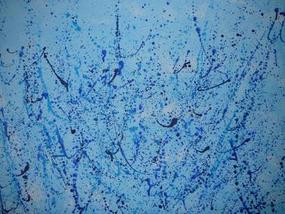

bei, in/aus & mit mir...
...gestaltet/geschaffen
sei es in Form von Bildern, Tonfiguren, Lyrik, etc. Ich ... - lasse meiner Fantasie/meinen Gefühlen einfach freien Lauf; - sehe zu, was AUS MIR kommt, wenn ich ganz BEI MIR bin; - lasse mich davon überraschen, was IN MIR steckt und nur darauf wartet, von mir ausgedrückt zu werden. Und wenn es für mich passt, gestalte ich auch direkt MIT MIR . Wer braucht schon Hilfsmittel, wenn er/sie sich selbst zur Verfügung hat?
Derart unterschiedlich sind daher auch meine Werke. Sehen Sie selbst - einen kleinen Auszug - auf diesen Webseiten oder, ein Vielfaches davon (109 Exponate, das 110te ist in Arbeit), bei meiner 1. Vernissage. Viel Vergnügen
________________________________________1. Vernissage am 9.9.2011 um 19 Uhr im EssKultur Marxergasse 14, 1030 Wien (MO-FR, 10-22 Uhr) - EssKultur-Homepage  easy going, 2009 - 50x70 (Acryl auf Leinwand) Die Bilder werden Achtung Terminänderung: nur bis 30.09.2011 im EssKultur ausgestellt sein. Was man sieht, hängt von dem ab, was man sucht. Autor unbekannt